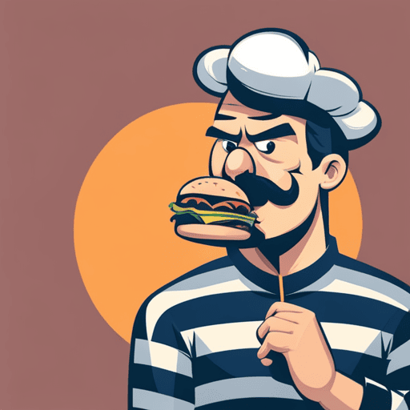

<<Back to Menu
The Burglar Burger

Eating this burger will allow you to meet the Burger Burglar. Be sure to leave him half of your burger!! This is crucial. He will eat this half without asking. Do not question him under any circumstances.
Ingredients
- 1 ½ tablespoons of misschief
- 1 striped black and white object
- 1 whispering burger patty
- 1 evil tomato
- 2 sclices of suspicious cheese
- 1 teaspoon black pepper
- ¾ teaspoon garlic salt
- 1 criminal pickle
- 2 hamburger buns
Directions
Step 1
Slice the criminal pickle (lengthwise) and the tomato into ~ ½ inch thick slices. Beware of the tomato's temper. The pickle will try to scam you. Again: Beware.
Step 2
Take the cheese out of the packaging. If it isn't already sliced
even though you bought sliced cheese, you should hide. Peak out from your hiding spot to see if there is any suspicious activity. Next – and you have to do this
confidently – you have to get up and wave the striped object around. Just do it. The cheese will try to convince you otherwise. Yet it is best you ignore it.
Step 3
Check again, and the cheese should now be sliced. If it is however
diced, repeat
Step 2. Now you have to mix the 1 ½ tablespoons of misschief with the black pepper and garlic salt. DO NOT ask any questions. Don't even think them.
Step 4
Serve on hamburger buns while touching the striped black and white object. Quickly and without hesitation eat half of the burger. Then wait.